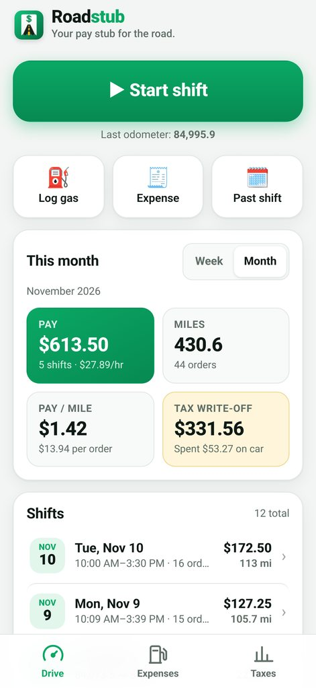
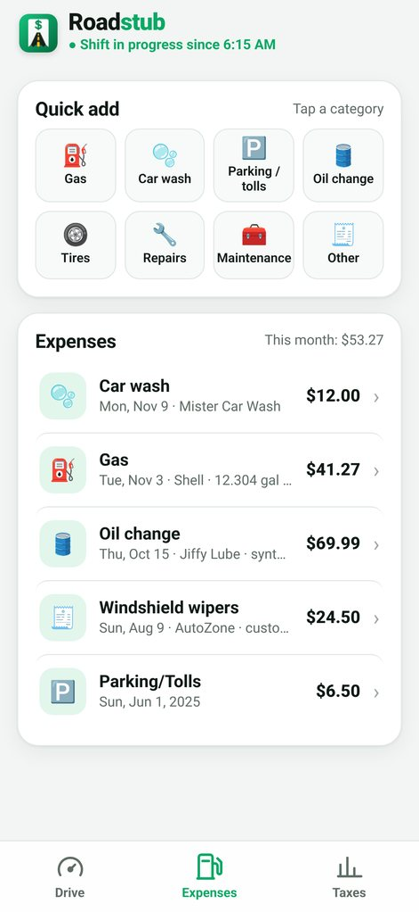
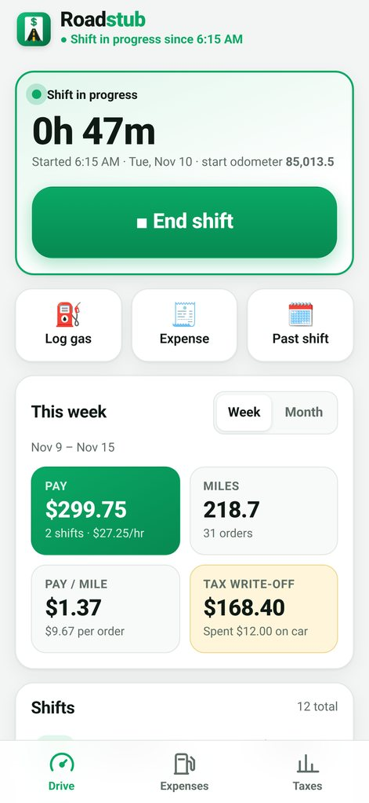
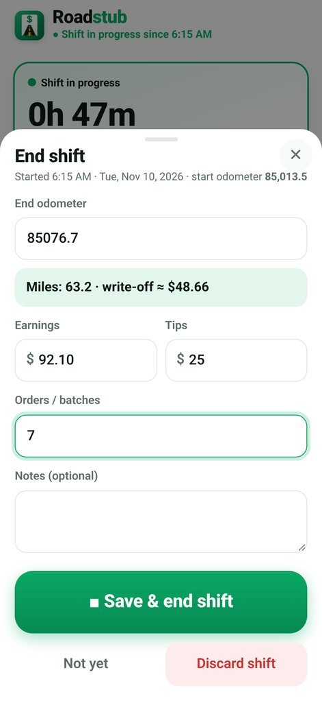
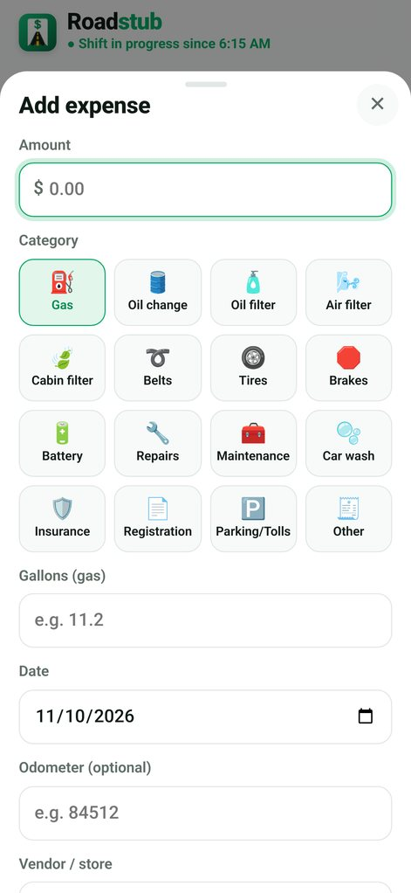
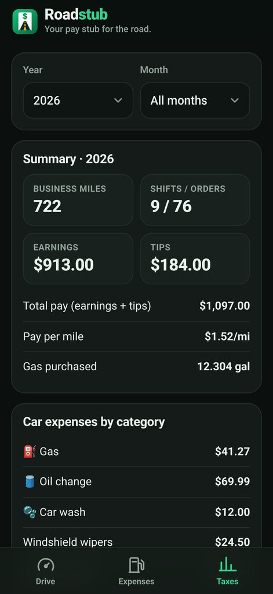

Roadstub logs your shift miles, pay, tips and car expenses on your phone, then adds up your mileage write-off and exports clean spreadsheets for tax time.
One-time price · No account · No subscription · Works offline · 14-day refund


Two taps to start a shift, two to end it. Roadstub does the math.
Tap Start, enter your odometer. Tap End, enter it again. Business miles are calculated for you, with the start and end readings saved.
Log pay, tips and orders per shift. See this week's and month's pay, pay per mile, per order and per hour.
Gas (with gallons and price per gallon), oil changes, tires, repairs, washes, parking and tolls, all in one-tap categories.
Applies the IRS standard mileage rate by each shift's date, and compares it with your logged actual costs. Rates are editable.
Download mileage and expense CSV files for any year or month. They open in Excel, Numbers or Google Sheets for you or your tax preparer.
No account, no server. Your log stays on your phone and works with no signal. Back it up to a file whenever you like.
Real screens from the app on an iPhone. Light and dark mode included. (Sample data shown.)




No download from an app store and nothing to sign up for.
After purchase you get a private link. Open it in Safari (iPhone) or Chrome (Android).
Use Share → “Add to Home Screen” (iPhone) or the ⋮ menu → “Add to Home screen” (Android). It opens full-screen like an app.
Start and end your shifts, log gas and expenses, and export your spreadsheets when tax time comes.
No subscription, no account, no ads.
Straight answers.
Yes. Roadstub is a web app, so it runs in Safari on iPhone and Chrome on Android, and you can add it to your home screen. It's not in the App Store or Google Play.
iPhone: open the link in Safari, tap the Share button, then “Add to Home Screen”. Android: open it in Chrome, tap ⋮, then “Add to Home screen” or “Install app”.
No. You enter your odometer at the start and end of each shift, so there's no GPS and no battery drain. It doesn't log trips automatically.
Everything stays in your phone's browser storage. There's no account and no server, and nothing you enter is sent anywhere. Because the data lives on your phone, use the built-in backup to save a copy to Files or email it to yourself. See the privacy policy.
Yes. After you've opened it once, it works offline.
Yes. Download a backup file on the old phone and restore it on the new one.
No. Roadstub gives estimates based on what you log. Always confirm the current IRS standard mileage rate at irs.gov and check with a tax professional. See the terms & disclaimer.
Ask for a refund within 14 days of buying and you'll get your money back, no questions asked. Reply to your Gumroad receipt email or message us through Gumroad.
Any of them. Roadstub doesn't connect to delivery apps; you type in your pay. It works the same for Instacart, DoorDash, Uber Eats, Spark, Amazon Flex, rideshare and more.